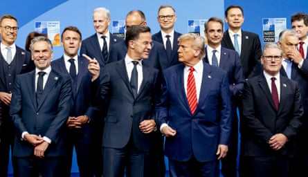
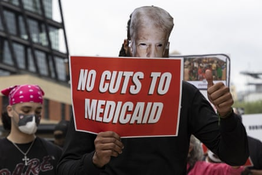

“D addy’s home.” So said a social media post from the White House, accompanied by a video featuring the song Hey Daddy (Daddy’s Home) by Usher and images of Donald Trump at the Nato summit in The Hague.
The US president’s fundraising allies were quick to market $35 T-shirts with his image and the word after Mark Rutte, the Nato secretary general, referred to Trump’s criticism of Israel and Iran over violations of a ceasefire by quipping : “And then Daddy has to sometimes use strong language to get [them to] stop.”
Yet even as Trump seeks to project an image of global patriarch, there are signs of trouble on the home front. His polling numbers are down . His party is struggling to pass his signature legislation. Millions of people have marched in the streets to protest against him. Critics say the president who claims to put America First is in fact putting America Last.
Trump is not the first president to find the foreign policy domain, where as commander-in-chief he recently ordered strikes on nuclear sites in Iran, less restrictive than the domestic sphere, where a rambunctious Congress, robust judiciary and sceptical media are constant irritants. But rarely has the gap between symbolic posturing abroad and messy politicking at home been so pronounced.
“There’s two presidencies,” said Larry Jacobs , director of the Center for the Study of Politics and Governance at the University of Minnesota. “The one on the domestic front is gruesome and involves long-drawn-out and disappointing negotiations with Congress and that’s exactly what Donald Trump is engaged in now. What emerges from Congress is not going to be as ‘big’ or ‘beautiful’ as he promised.
“Meanwhile you’ve got staggering photographs of bombs falling from the sky, Donald Trump’s flamboyant description of what he’s achieved in Iran and Europe. That’s the kind of Hollywood performance that Donald Trump wants.”
The president stunned the world last Saturday by announcing, on his Truth Social platform, that he had ordered more than 125 aircraft and 75 weapons – including 14 bunker-busting bombs – to hit three targets in Iran to prevent the country obtaining a nuclear weapon.
He followed up with a White House speech , choreographed to project an image of power, in which he declared: “Tonight, I can report to the world that the strikes were a spectacular military success. Iran’s key nuclear enrichment facilities have been completely and totally obliterated.”

Trump promotes his ‘one big beautiful bill’ at a White House event, although the legislation is facing difficulties with congressional Republicans.Photograph: Nathan Howard/Reuters
That narrative has since been cast into doubt by a leaked intelligence report suggesting that the operation set back Iran’s nuclear programme by only a few months. Still, Trump pivoted to the role of peacemaker, again using Truth Social to announce a ceasefire between Iran and Israel, prompting Republicans to gush that he should win the Nobel peace prize .
Trump’s barrage of speeches, interactions with reporters and social media posts about the Middle East were likened by some to a daily soap opera, dominating Americans’ attention and distracting them from his one big beautiful bill, a budget plan that threatens to slash the social safety net that many of his own supporters depend on.
Jacobs observed: “This is a classic deception. He’s like the carnival barker who’s waving his hands to keep the attention of the audience even as he’s hiding the part for the next trick.
“What’s coming out of Congress is going to absolutely harm many of his voters. Politicians like to cover their tracks; there’s no covering the tracks here. There will be known cuts to widely used popular programmes like the healthcare for Medicaid and there will be no doubt as to who’s responsible. These are traceable, highly visible consequences of Donald Trump.”
Now in the sixth month of his second presidency, Trump’s domestic honeymoon is over. A poll of 1,006 likely voters nationwide by John Zogby Strategies on 24 and 25 June found the president’s approval rating down three points to 45%. About 49% of voters approve of his handling of immigration while 47% disapprove but on the economy 43% approve and 54% disapprove.
Asked if they expect Trump’s presidency will make them financially better off or worse off, 40% said better and 50% said worse. Zogby commented: “There is a lot of anxiety domestically, first and foremost on the economy. People are confused and insecure. The numbers are plunging.”
Riders from Connecting Compton ride in a ‘cabalgata’ for human rights, following multiple detentions by immigration authorities, in Paramount, California, on Sunday.Photograph: Jill Connelly/Reuters
Consumer confidence unexpectedly deteriorated in June , a sign of economic uncertainty because of Trump’s sweeping tariffs. The anxiety reported by the Conference Board was across the political spectrum, with the steepest decline among Republicans. And the share of consumers viewing jobs as plentiful was the smallest since March 2021.
Elizabeth Warren, a Democratic senator, argued in a floor speech this week that Trump had broken him promise to lower costs “on day one”. She said: “American families don’t need another war – they need good jobs and lower prices, and that is what we should be focused on.”
Warren listed 10 ways in which the One Big Beautiful Bill Act would raise costs for families, from rent to groceries to prescription drug prices, and warned that it will take healthcare away from more than 16 million people. Republicans in the House of Representatives and Senate continue to haggle over the contents of the bill as a 4 July deadline looms.
Neera Tanden , president and chief executive of the Center for American Progress and a former domestic policy adviser to President Joe Biden, told an audience on Thursday: “This legislation is the greatest Robin Hood-in-reverse legislation that I have ever seen in my lifetime. It is cutting healthcare for working-class people and using those dollars to fund tax cuts for the wealthiest Americans.”
The Nato chief, Mark Rutte, talks to Trump during a group photo at the 2025 Nato summit in The Hague on Wednesday.Photograph: Robin Utrecht/Shutterstock
Meanwhile discontent is simmering over Trump’s signature issue of immigration, even among some of his own voters. Videos of people being snatched off the streets or beaten by Immigration and Customs Enforcement (Ice) agents have provoked widespread revulsion .
There have also been cases such as that of Ming Li Hui, a popular member of staff at a restaurant in rural Missouri who was arrested and jailed to await deportation. Her friend Vanessa Cowart told the New York Times : “I voted for Donald Trump, and so did practically everyone here. But no one voted to deport moms. We were all under the impression we were just getting rid of the gangs, the people who came here in droves.”
Meanwhile aggressive workplace raids are hurting hotels, restaurants, farms, construction firms and meatpacking companies, including in conservative states. The alarm recently got through to Trump, who admitted that some undocumented immigrants were actually “very good, longtime workers” and ordered a temporary pause, only to then yield back to hardliners in his administration.
Wendy Schiller , a political science professor at Brown University in Providence, Rhode Island, said: “In a restaurant, if you lose your cooks, you can’t serve people and you lose money. If you are in a factory where people have been swooped up by Ice, you have to do more work.
“It puts more of the burden on the same people who might have voted for Donald Trump – lower-income or middle-income factory workers or meat-processing people. They’re feeling the effects of this immigration sweep in ways that the administration did not anticipate.”
A demonstrator in New York earlier this month makes a point about Trump’s plans for healthcare.Photograph: Gina M Randazzo/Zuma Press Wire/Shutterstock
Trump’s second term has been further marred by the tech billionaire Elon Musk leading a “department of government efficiency”, or Doge, that fired thousands of federal workers but fell far short of its cost-saving target before Musk left amid acrimony. The president’s authoritarian attacks on cultural institutions, law firms, media organisations and universities fuelled “No Kings” protests involving more than 5 million people in more than 2,100 cities and towns across the country on 14 June.
In that context, it is perhaps not surprising that Trump should relish the global stage, where any world leader is just a phone call away and where he is now being feted as statesman and father figure. It has proven easier to drop bombs on Iran or pressure Nato to agree to a big increase in military spending than to tame Thomas Massie , a rebellious Kentucky Republican defying him over both Iran and the spending bill.
Schiller added: “It is true for every president, Republican or Democrat, that when things are going south domestically they turn to foreign affairs. Trump feels in some ways more powerful on the global stage than he does trying to get Congress to do what he wants. The House Republicans are giving him a hard time. The Senate Republicans are giving him a hard time. He’s annoyed by this so then he goes, well, we’re a global military power.”